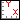
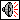

Le menu local (clic droit) et la barre de boutons permettent
Loupe (menu Echelle Zoom avant)
(menu Echelle Zoom arrière)
(menu Echelle manuelle)
 (menu Echelle automatique)
(menu Echelle automatique)

ouvre une boite de dialogue permettant le choix des coordonnées ouvre (ou ferme) le volet modélisation
ouvre (ou ferme) le volet modélisation
permet d'identifier les pages (en cas de superposition) ou les ordonnées : place le commentaire de page (ou le nom de l'ordonnée) sur la courbe correspondante.
 animation du graphe.
animation du graphe.

permet d'écouter la courbe courante : cela n'est possible que s'il y a plus de 1000 de points avec une fréquence d'échantillonnage correcte (de préférence 22050 ou 11025 Hz).permet de recalculer toutes les données dans le cas d'utilisation de fonctions aléatoires et ainsi de faire un nouveau tirage (raccourci clavier F4).
Deuxième graphe : le menu local (clic droit) ou le bouton permet d'ouvrir un deuxième graphe indépendant du premier. Lorsque les deux graphes sont ouverts, le graphe actif, sur lequel portera la prochaine action (choix des coordonnées par exemple), est le dernier dans lequel on a cliqué, il est indiqué par soulignement des ordonnées.
La boite liste dans la barre de boutons permet de choisir un outil.
Le menu local Copier permet d'envoyer le graphe sous forme de bitmap (BMP), de metafile (WMF) ou de fichier traceur (PLT, fichier uniquement) vers le presse-papiers ou un fichier pour récupération par un traitement de texte. Remarque : si vous utilisez les graduations centimétriques, elles sont prévues pour une dimension de graphe de 16 cm x 10 cm, mais MSWord imprime avec une taille inférieure de 2,5 % si l'on passe par le presse-papiers et avec une taille supérieure de 2,5 % si l'on passe par un fichier ! Dans Word, le mieux est de faire « collage spécial » « métafichier Windows ».
Remarque 1 : Word OpenOffice peuvent récupérer les metafile (*.EMF) par le presse-papiers. Le copier simple (bouton  ) envoie sous forme de Metafile. Cela fonctionne sous Windows7.
) envoie sous forme de Metafile. Cela fonctionne sous Windows7.
Remarque 2 : pour diminuer la taille occupée par le graphe et faciliter la visualisation et l'impression avec votre traitement de texte, il peut être utile de prendre comme dimension des points 1 (les points expérimentaux seront représentés uniquement sous forme de points).
Un clic positionne sur le point le plus proche avec mise à jour du tableau de valeurs.
La frappe de la touche Suppr supprime le point le plus proche du curseur. Pour supprimer un ensemble de point utiliser la gomme.
Les unités sont affichés sur les axes
Créé avec HelpNDoc Personal Edition: Produire des livres EPub gratuitement